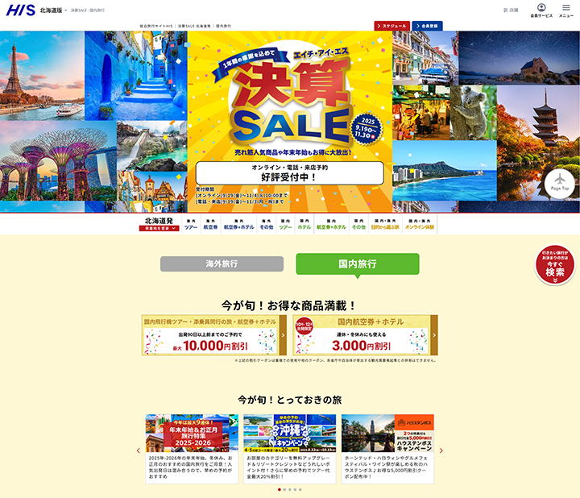

ポイントサイト「PONEY」において、企業キャラクターのデザインを担当しました。
サイト全体のイメージキャラクターとして、親しみやすさと信頼感を意識しながら設計。
表情やポーズのバリエーションを制作し、バナー・特集ページ・SNSアイコンなど多様な媒体で展開可能な仕様としました。
また、利用シーンごとの最適化を行い、キャンペーン訴求力やユーザー認知度向上に貢献しました。
URL
担当
・企業キャラクターのデザイン・制作（全身・表情・ポーズバリエーション）
・サイト内バナー・特集ページ用イラストの制作
・キャンペーンや季節に合わせたキャラクター展開の企画
・SNSアイコンやメールマガジン用キャラクター素材の制作
・印刷物（POP・チラシ・ポスター）用キャラクターイラスト作成
作成目的
ポイントサイトのブランドイメージを親しみやすく伝えるため、
ユーザーに長く愛されるキャラクターを制作。
信頼感と楽しさを両立し、キャンペーンや特集など多様な場面で活用できるデザインを目指しました。
デザインコンセプト
「毎日ポイントを貯める楽しさ」をテーマに、
明るく親しみやすい雰囲気と、やさしい表情を意識してデザイン。
サイトカラーとの調和や、画面上での視認性・展開のしやすさにも配慮しています
メインキャラクター「ぽにこ」のアップデート
PONEY公式キャラクターのメインキャラクター「ぽにこ（ポニーモチーフ）」を
サイト全体のブランドイメージや目的に合わせ、親しみやすさと表現力を向上させる形でアップデートしました。
今後のグッズ展開や多様な媒体での活用を考慮し、表情やポーズ、色彩をブラッシュアップ。
バナー・LP・SNS・メルマガなどで使用しやすいビジュアルに最適化し、
ブランドの統一感を維持しつつ、ユーザーに愛されるデザインに仕上げました。
【ぽにこアップデート】

季節・キャンペーン用キャラクターの新規制作
PONEYのキャンペーンや季節イベントに合わせた新規キャラクターを制作しました。
ハロウィンやゲームコンテンツ向けの猫モチーフキャラクター、冬キャンペーン用のトナカイモチーフキャラクター「となっち」、
特別企画用のペガサスモチーフキャラクターなど、多彩なキャラクターを展開。
各キャラクターはバナー・LP・メルマガなどのオンライン媒体や印刷物で活用され、
キャンペーンごとのテーマ性や世界観を演出し、ユーザーの注目と参加意欲を高めました。
【季節・キャンペーン用キャラクター制作】
冬季キャンペーン「メインキャラ選挙」での「となっち」採用
12月の冬季キャンペーン「メインキャラ選挙」において、キャラクターデザインとビジュアル制作を担当しました。
X（当時のTwitter）・Instagramで、冬をテーマにした3案（トナカイ・ペンギン・シロクマ）のラフイラストを公開し、ユーザーの投票やコメントを募る施策を実施。
その結果、最も反響の大きかったトナカイモチーフの「となっち」が正式キャラクターとして採用され、
双方向コミュニケーションを通じてユーザーに親しまれるキャラクターとして定着しました。
【12月キャンペーン：メインキャラ選挙】